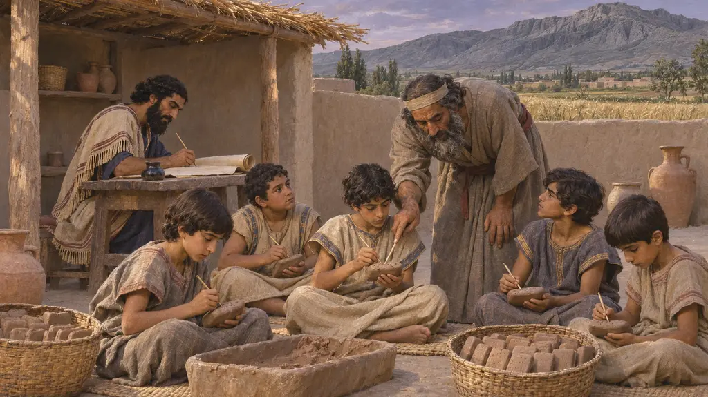
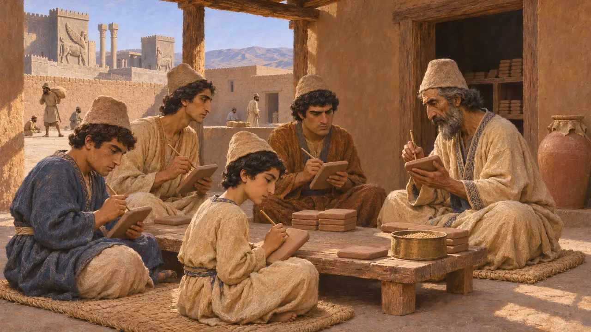
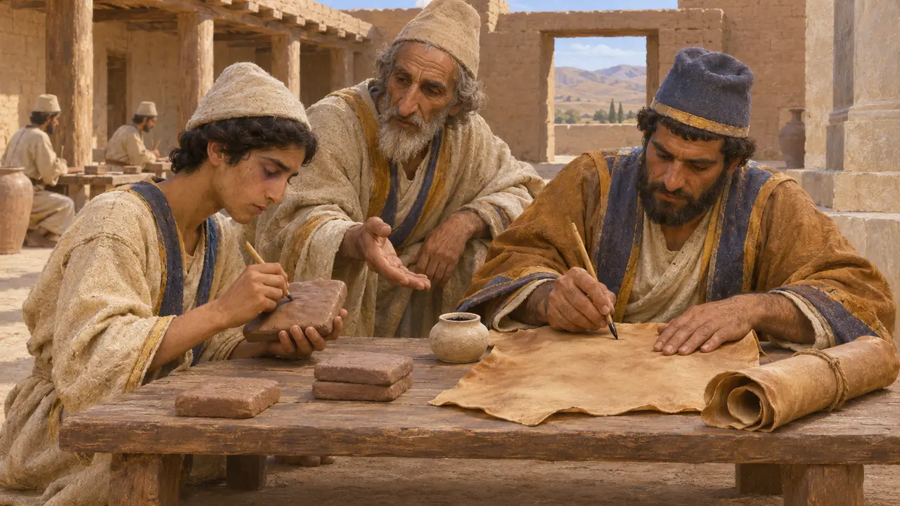
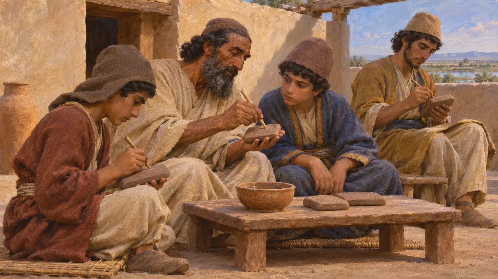
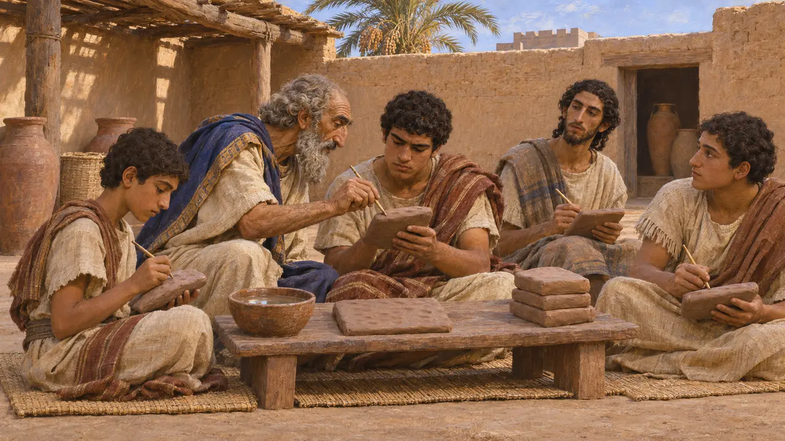
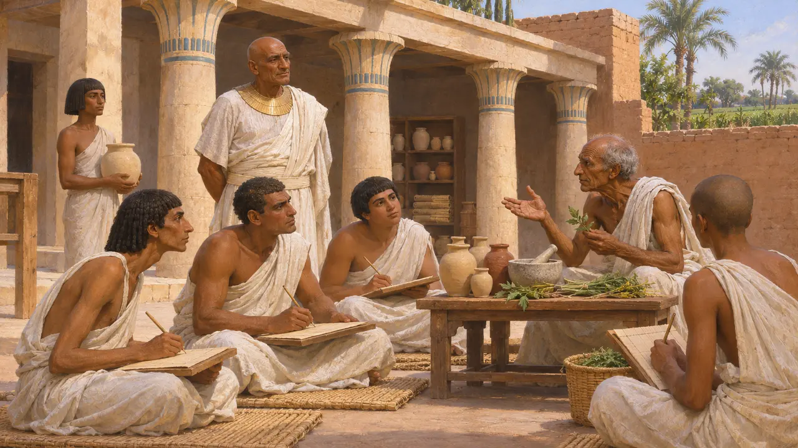
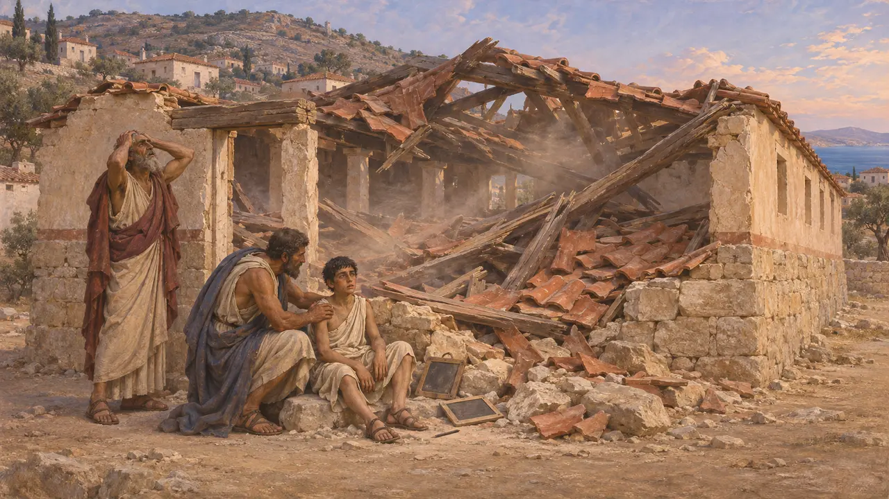

Scribal School
Training scribes in the Persian empire and its neighbours, 6th-5th centuries BCE
В игре: Уровень 1: Гробница основателя
The Persian empire ran on written records, kept by trained scribes in Elamite on clay and in Aramaic on leather. How those scribes learned their trade is mostly unrecorded. No school of the period has been excavated in Persia, so the evidence is the records themselves and the better-known training of Babylonia and Egypt.
В игре: The Scribal School sends a teacher along the streets, and Elder's Houses and Noble Residences need his visits. Walking teachers and schooling as a household need are the game's simplifications: formal schooling reached few people, and as far as we know only boys. At Memphis it is the House of Life, on the Greek coast a Letter School.

Boys copying texts
Свидетельства эпохиTwo Elamite tablets from Persepolis, dated to Darius's twenty-third year (499 BCE), issue grain and wine to Persian boys copying texts (Hallock's nos. 871 and 1137). They are the nearest thing to a schoolroom in the archive. The Elamite word for boys, puhu, is also used of servants and subordinates, so these may be young dependants at work rather than pupils.
R. T. Hallock, Persepolis Fortification Tablets, 1969; M. Dandamayev, Education i, Encyclopaedia Iranica

Clay and leather
Свидетельства эпохиThe Fortification tablets, about 509-493 BCE, are mostly Elamite cuneiform on clay, with a smaller group in Aramaic. Aramaic was also written in ink on leather, as in the letters of the satrap Arshama. A scribe of the empire could need more than one language and more than one way of writing.
R. T. Hallock, Persepolis Fortification Tablets, 1969; J. Naveh and S. Shaked, Aramaic Documents from Ancient Bactria, 2012

Did Persians learn their letters?
СпорныйHerodotus's three lessons for Persian boys include no reading or writing, and Dandamayev argues that writing played no part in a Persian noble's standard education: scribes were a separate trade, often Elamite, Babylonian or Aramaic. The boys of the tablets show that some Persians did learn it. How many is unknown.
Herodotus 1.136; M. Dandamayev, Education i, Encyclopaedia Iranica

The tablet house of Babylonia
Свидетельства эпохиBabylonia had the older tradition. The tablet house, a school for scribes, is best known from the early second millennium BCE, a thousand years and more before Cyrus. In the first millennium pupils still copied set texts, often taught at home or by a master, and Babylonian scribes of the Persian period included sons of shepherds, fishermen and weavers.
P. Gesche, Schulunterricht in Babylonien im ersten Jahrtausend, 2001; M. Dandamayev, Education i, Encyclopaedia Iranica

The House of Life at Sais
Свидетельства эпохиThe Egyptian official Udjahorresnet says on his statue that Darius sent him home from Elam to restore the House of Life, the temple's place of learning and of medicine. He says he filled it with students, sons of men of standing and no poor man's son. Darius paid for this in Egypt: the statue is our one account of it.
Statue of Udjahorresnet, Vatican Museums; M. Lichtheim, Ancient Egyptian Literature III, 1980

A roof at Chios
Античное свидетельствоHerodotus gives the first Greek school on record only because it fell. On Chios, shortly before the Ionian fleet's defeat about 494 BCE, a roof collapsed on boys learning their letters, and of a hundred and twenty one lived. Herodotus takes it as a sign of the disaster coming to the island.
Herodotus 6.27
Источники
- R. T. Hallock, Persepolis Fortification Tablets, 1969
- M. Dandamayev, Education i, Encyclopaedia Iranica
- J. Naveh and S. Shaked, Aramaic Documents from Ancient Bactria, 2012
- Herodotus 1.136
- P. Gesche, Schulunterricht in Babylonien im ersten Jahrtausend, 2001
- Statue of Udjahorresnet, Vatican Museums
- M. Lichtheim, Ancient Egyptian Literature III, 1980
- Herodotus 6.27